仿真
RoboTwin：80.8% Clean / 20.6% Random；hybrid 63.1% / 29.2%。
把可组合技能写成代码，与未来视频和动作块联合去噪，让动作拥有结构化的子任务条件。默认模式不执行代码；hybrid 才尝试调用技能，且有效代码不等于有效物理执行。
普通 WAM 可生成视觉未来与动作，却缺少“先固定包、再拉拉链”的显式组合结构；Code-as-Policy 有组合技能，但其手写感知/控制 API 的物理能力有限。AW-0 把两者接在同一个模型里，让代码成为可学习的中间条件，而不是把所有控制委托给脚本。
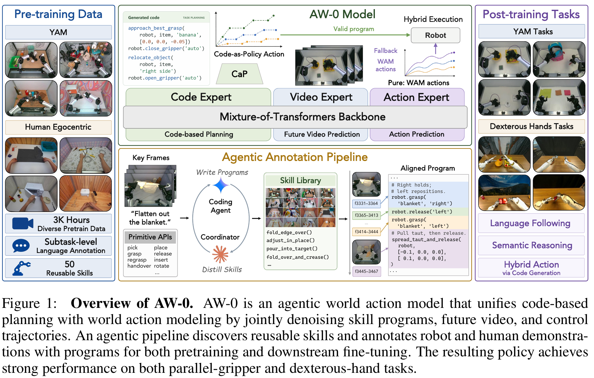
| 背景 | 视频先验与技能复用缺少联合接口。 |
|---|---|
| 卡点 | 仅预测像素不能明确表达任务阶段；代码可组合却可能无法处理复杂接触。 |
| 关键改动 | 离散代码、连续视频、连续动作共同去噪；模态有向 attention；自动技能标注。 |
| 依赖 | SDAR-1.7B、Qwen3-VL-2B ViT、Cosmos-Predict2.5-2B、Wan2.2 VAE、CaP 与机器人数据。 |
| 最强证据 / 代价 | 代码表示与 mask 的内控消融有收益；需要约 3K 小时数据、额外代码标注与专家计算，仍容易受视觉分布变化影响。 |
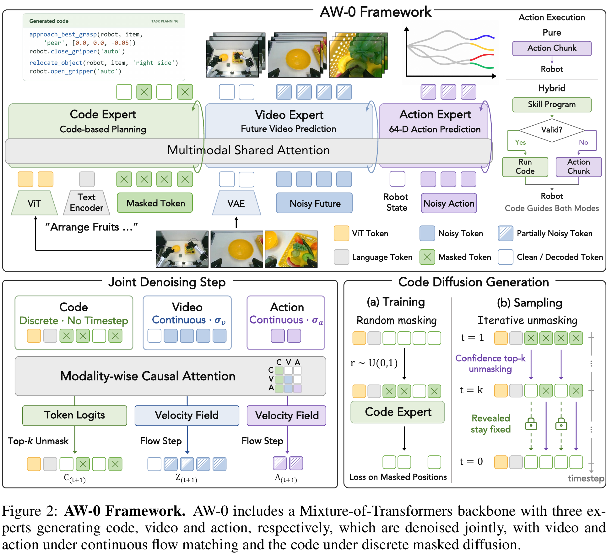
28 层 MoT 的共同 attention 为 2048D、16 heads×128；代码/视频专家 hidden 2048，动作 1024。代码预训练 embedding、norm、FFN、词表头冻结，训练 attention 投影/调制；ViT 冻结、merger 可训。视频路径把原VAE换成冻结的 Wan2.2 VAE（48 channels），视频专家的输入输出投影重新初始化；动作专家从零开始。不要把“使用预训练专家”理解成所有主干参数都冻结。
统一记号：C 是代码，Z 是未来视频 latent，A 是动作；下标 0 表示干净目标，不是机器人第 0 帧。𝒞ₜ={Oₜ,L,Sₜ,Mₜ} 是当前图像、指令、状态和历史记忆。r 为代码 mask 比例；σ 是连续变量噪声水平，和环境时间 t 不同。以下数字为教学示例。
logits 是各词的未归一化分数；v̂ 是连续 flow 速度。代码选择离散词，视频/动作更新实数，因此“joint”不是把三者都量化成语言 token。例：同一观察下输出“固定左侧再拉右侧拉链”的程序、拉链变化的图像 latent 和双臂位移序列。
X 表示视频或动作；ε 为同形状高斯噪声。视频原始 u 来自缩放 Beta(7,1)，动作来自均匀分布。u=.5 时 σ=2.5/3≈.833，更多训练点在高噪区。若 X₀=2、ε=0，输入为 .334，目标速度 ε−X₀=−2；生成沿 σ 从 1 到 0 积分。
只对被 mask 的位置计算交叉熵，并确保至少一个位置被 mask。例：pick(apple,right) 遮掉 apple/right 后，由图像、指令和其他可见代码补全；不是模仿任意不可见未来事件。15% batch 另有指令/程序条件 dropout，区别于目标位置随机 mask。
视频预训练偏高噪；动作与代码学习可能需要更清晰的未来特征。混入均匀采样增加中低噪声覆盖，但直接改变采样会改变目标，所以还有下一式的权重。
实际权重截断到 4 并按 batch 均值归一化。例：某噪声区 ppre=1.6、U=1，q=1.3，则视频权重≈1.23，代码/动作≈.77；不是让所有模态同样偏好高噪。截断/有限 batch 使其成为稳定化的重要性加权，不应声称严格无偏。
不是。它约束每层 attention 的可见性；三路在同一组去噪迭代中逐渐更新。AR 是另一个独立对照，不能从箭头读出串行调用次数。
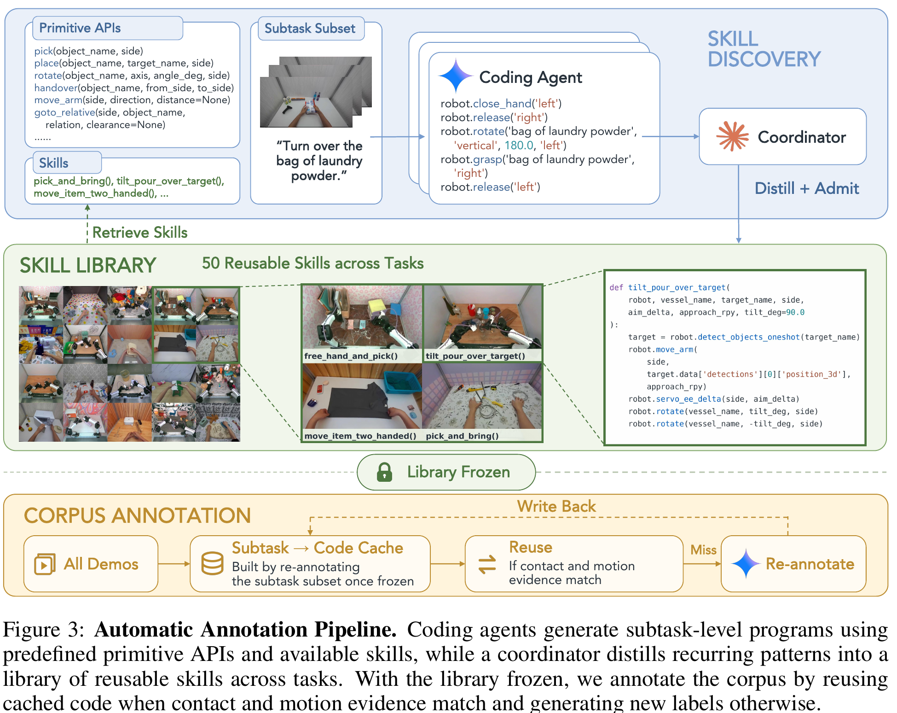
| 来源 | episodes | 小时 | 任务 / 切片 | 监督 |
|---|---|---|---|---|
| YAM 机器人 | 73,101 | 1,919.30 | 279 / 986,314 | 代码、未来视频、动作 |
| 人类第一人称 | 175,541 | 993.91 | 327 / 1,089,059 | 追踪/重定向后的手动作及代码、视频；不是仅有 RGB |
| 合计 | 248,642 | 2,913.22 | 606 / 2,075,373 | 23 个 YAM＋27 个人类技能；总 50 |
统一 state/action 为 64D：左右各 9D EEF pose（3 位置＋6 旋转表示）、22D 手关节、1D 夹爪，共 2×32。机器人实际自由度并非 64。状态为绝对值；EEF 动作为相对 chunk 起点，手指/夹爪为绝对目标。不存在的维度置零且不参与归一化，有效维度按 1%/99% 分位缩放。人类单相机复制到三视图槽位，不能把它算成三路独立观测。
预训练 48×H100，1 epoch，effective batch 2592（每卡 6×累积 9），AdamW 1e−4；图像 224×320，9 帧（0,4,…32），只第 0 帧观测。RoboTwin 后训练 16 GPU、batch 96、100K steps；真机每任务 100 demonstrations、20 epochs。各 baseline 使用各自公开预训练与训练配方；同目标任务示范量不等于总预训练量、训练算力都严格相等。
模型同时给出代码与动作；仲裁器检查代码能否接管。这里的 valid 是语法、依赖和阶段检查，不是世界模型已证明它一定能成功。
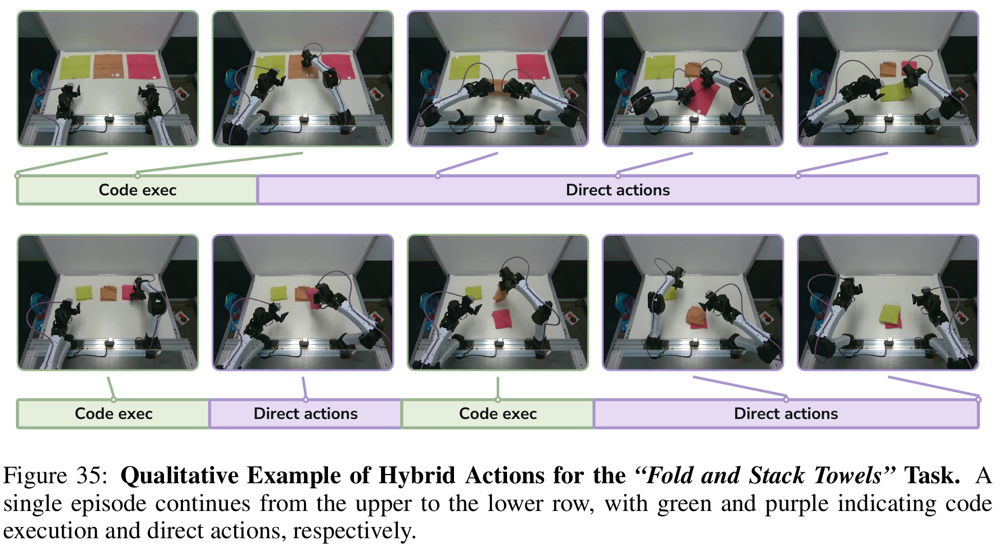
| 集合 | Clean 代码占比 | Random 代码占比 | 解释 |
|---|---|---|---|
| 仅成功 episodes | 14.5% | 35.0% | 成功样本更常利用代码；不能推广到所有尝试。 |
| 全部 episodes | 8.5% | 5.6% | 失败运行更长、常卡在直接动作，因此按时间汇总分母完全不同。 |
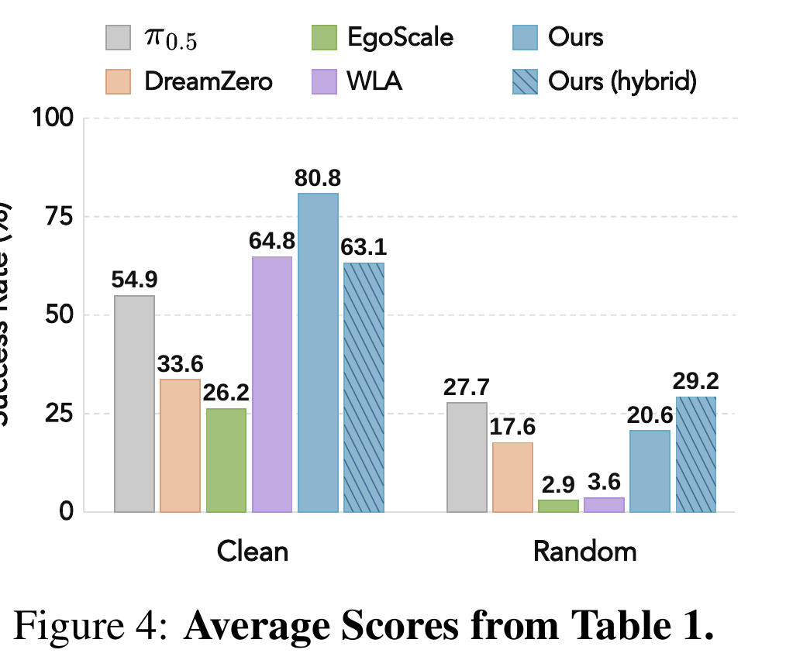
| 方法 | Clean SR | Random SR | 平均 |
|---|---|---|---|
| π₀.₅ | 54.9 | 27.7 | 41.3 |
| DreamZero | 33.6 | 17.6 | 25.6 |
| EgoScale | 26.2 | 2.9 | 14.5 |
| WLA | 64.8 | 3.6 | 34.2 |
| AW-0 | 80.8 | 20.6 | 50.7 |
| AW-0 hybrid | 63.1 | 29.2 | 46.2 |
50 任务，每任务 50 条 clean 示范；每设置每任务 50 rollouts，共 2,500。仿真 action 为 14D。hybrid 使用 CaP 收集示范，默认使用 RoboTwin 原规划器，所以表比较的是两套配置整体，不是纯执行模式开关。感知用 Molmo、SAM3、Contact-GraspNet 和原生控制接口；评价不读特权状态，数据收集可以使用。
| 维度 | 测试情况 | 可得结论 |
|---|---|---|
| 背景 / 桌纹 / 光照 / 高度 / 干扰物 | Random 同时变化；没有各维度独立表 | 默认下降 60.2 pp、保留率 25.5%；hybrid 下降 33.9 pp、保留率 46.3%。不可归因某一个因素。 |
| 语言跟随 / 语义推理 | 真机任务规则、颜色、顺序变化 | 有实例与任务评分，未报告独立语言 OOD 配对 SR。 |
| 载荷 / 摩擦 / 动力学 / 新本体零样本 | 未单独报告 | 不能由视觉 Random 自动推出物理鲁棒性。 |
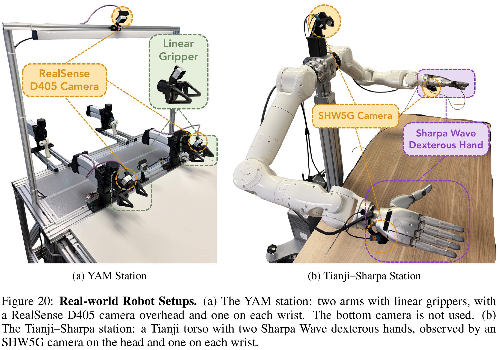
| 任务 | AW-0 | π₀.₅ | DreamZero | 目标 |
|---|---|---|---|---|
| 整理水果 | 91.7 | 70.8 | 53.3 | 类别、坏果与目标 |
| 收背包 | 64.6 | 49.7 | 36.7 | 双臂固定 / 拉链 |
| 换灯泡 | 75.0 | 63.8 | 67.4 | 先判断是否损坏 |
| 折叠堆毛巾 | 84.4 | 81.7 | 79.8 | 三条折叠与颜色顺序 |
| 夹子整理水果 | 54.2 | 7.3 | 22.6 | 工具接触 |
| 发牌 | 58.3 | 13.1 | 37.1 | 双手交接与抽单张 |
| 翻记分牌 | 68.8 | 26.3 | 28.4 | 精确翻 k 次并按按钮 |
| 转回魔方一面 | 72.1 | 36.1 | 42.5 | 随机一面四分之一圈复原 |
| 平均 | 71.1 | 43.6 | 46.0 | 不是完整成功率 |
共 384 条试验/方法，但分步得分不是 Bernoulli 成败，不能用 71.1%×384 反推成功数或 Wilson 区间。任务权重、时限、人工干预与训练种子不确定性须按原协议理解；这里没有闭环在线自我学习或 ICL 单独实验证明。
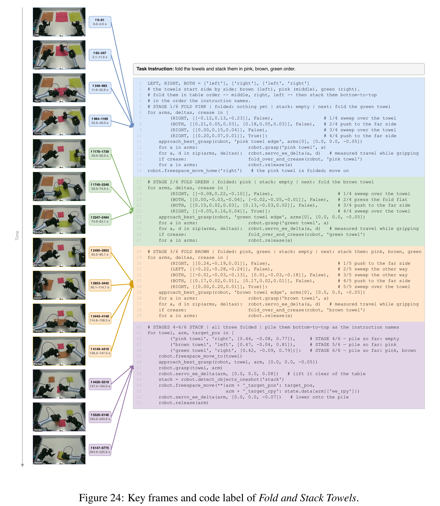
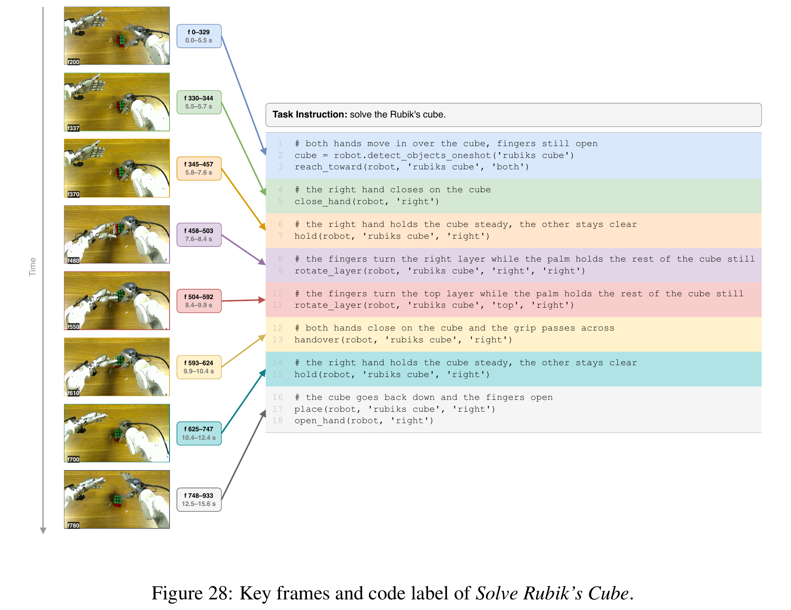
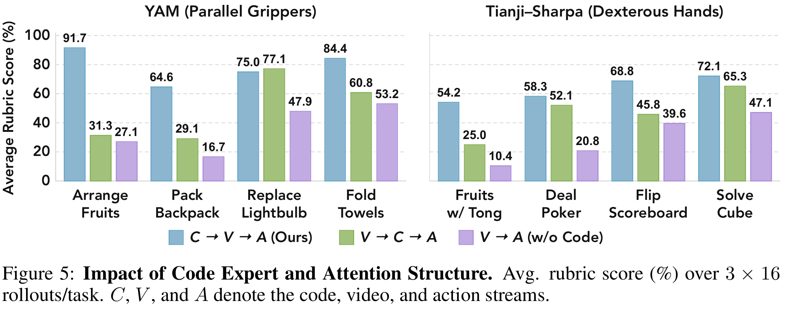
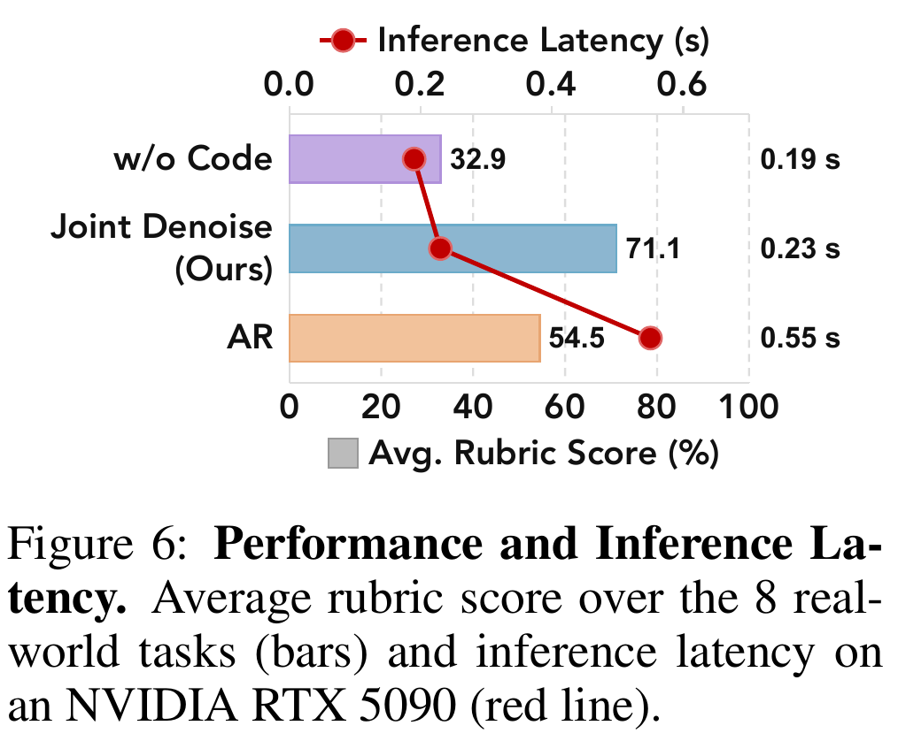
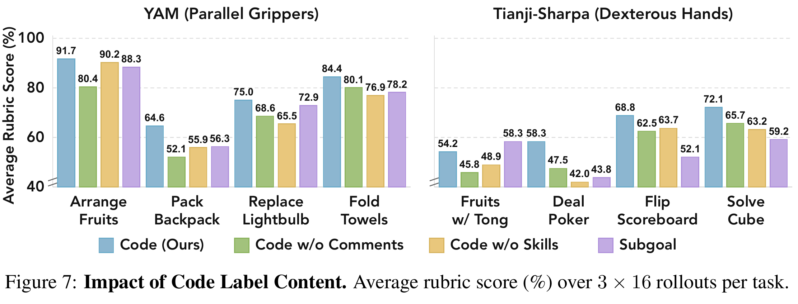
代码流用 ViT 条件比用 VAE 条件平均 71.1 vs 55.6（Table 3），支持语义视觉特征有益；joint 比 AR 为 71.1 vs 54.5（Table 4），但灯泡 AR 79.2 高于 joint 75.0。不能把平均改进说成所有任务都改进。
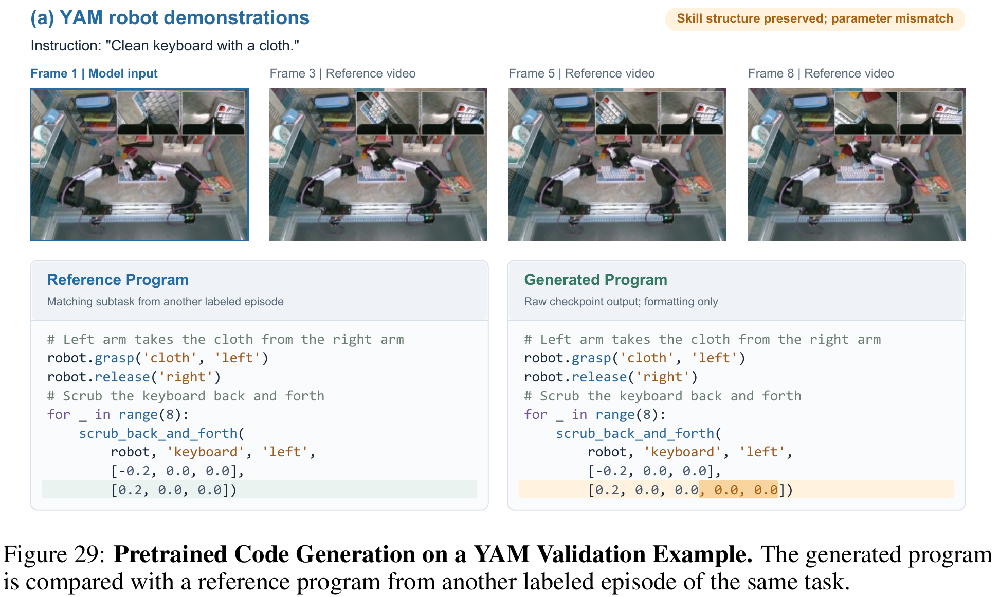
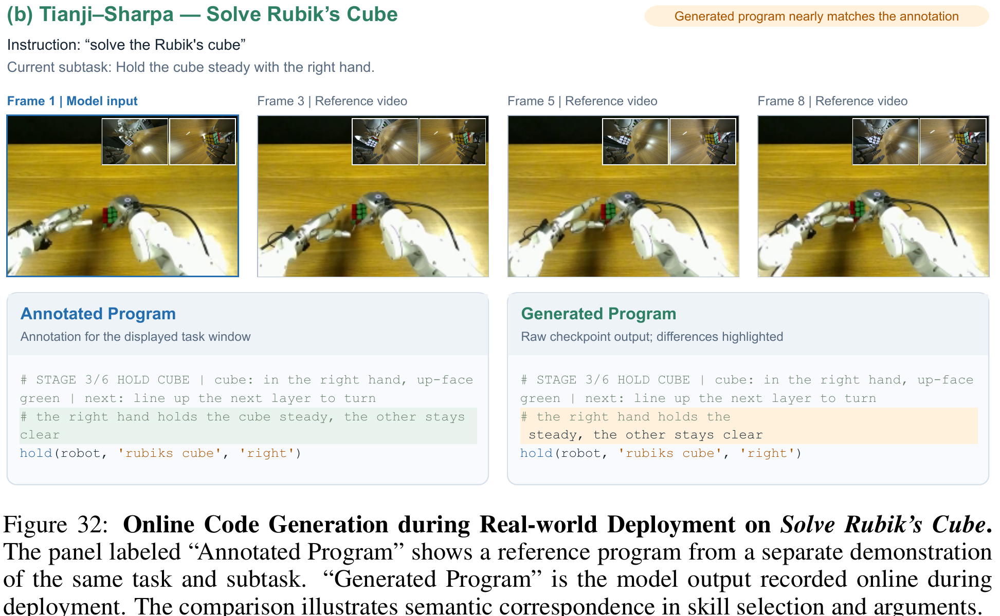
预训练代码验证：teacher-forced token accuracy .897、自由生成 parse rate .875、Entity F1 .534、Primitive F1 .365、skill-call rate .292。打乱视觉使代码 loss 增加 1.774，说明依赖视觉，但不证明每个参数都被准确落到场景。代码语法与执行成功之间还隔着变量、单位、接触、控制器等多层条件。
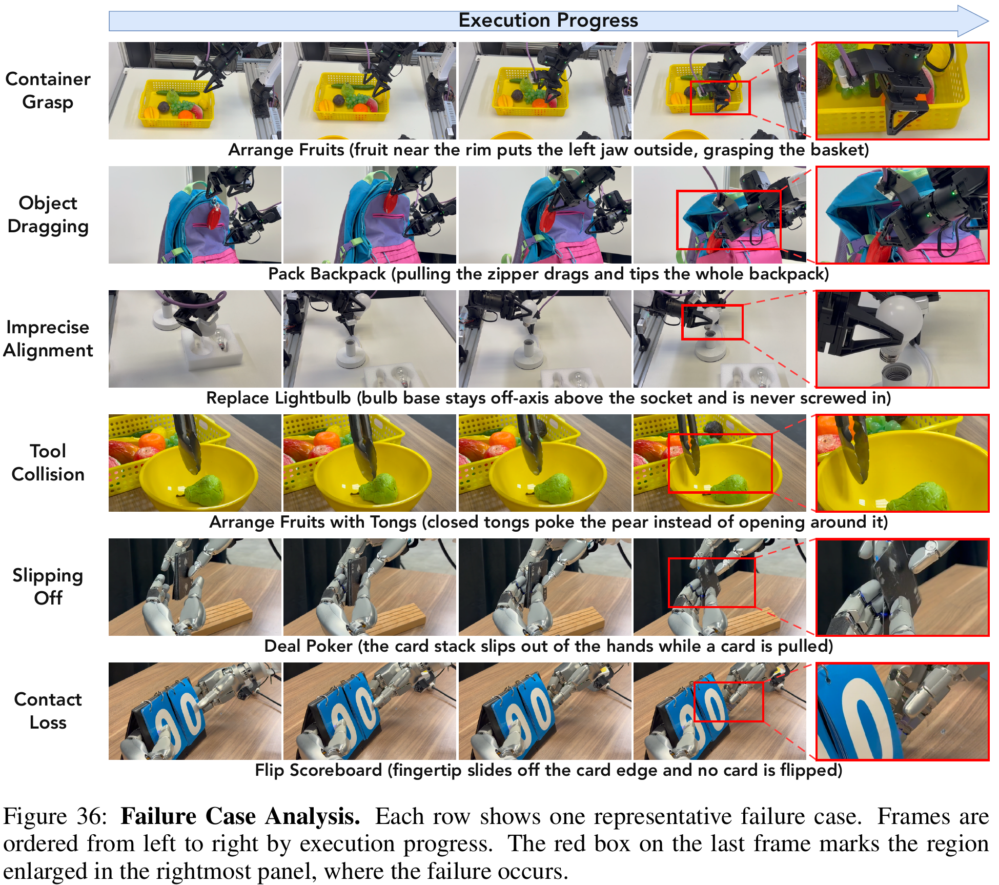
| 范围 | 细读内容 | 本文落点 |
|---|---|---|
| A pp.17–18 | 层数、冻结策略、时间步、4 次去噪 | §2–3、延迟解释 |
| B pp.18–27 | 统一表示、50 技能；Figures 8–19 技能例与 t-SNE | §4；t-SNE 邻近不是技能因果有效性证明 |
| C–E pp.27–36 | baseline 配方、硬件、全部评分 | §6–7；Figures 21–28 同类逐任务展示 |
| F–H pp.36–43 | 代码质量、未来帧对比、失败 | §8；Figures 33/34 不是严格同初始状态配对视频 |
| I–J pp.43–47 | 仲裁算法、仿真 task-level 表、代码时间占比 | §5–6；Fig 37 两例不能替代成功率 |
| K–L pp.46–50 | 两类 API、标注提示词、协调者协议、局限 | §4；提示词是数据方法，不是读者应该执行的指令 |
最值得借鉴：用可验证接触事件约束代码标注，把任务组织与连续控制连接起来；同时用明确 mask 设计信息流。尚未做到：在线从失败学习、自动扩充技能库、任意灵巧手执行代码、鲁棒的收益预测仲裁。当前 hybrid 的“能执行就尝试”是启发式，不是规划最优性保证。
代码在 WAM 内部和视频/动作共同训练、共同迭代，能够影响连续控制表示；并非仅一个外部 LLM 把字符串送给现成 VLA。hybrid 又额外接上真实 API 执行，但这个分支必须单独评估。